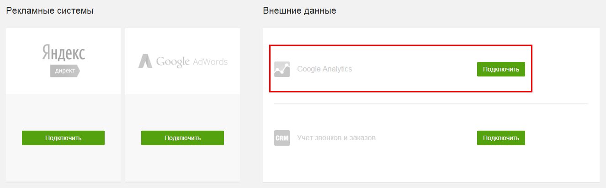
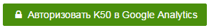
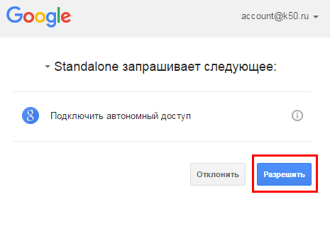
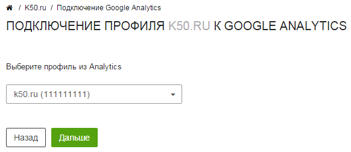
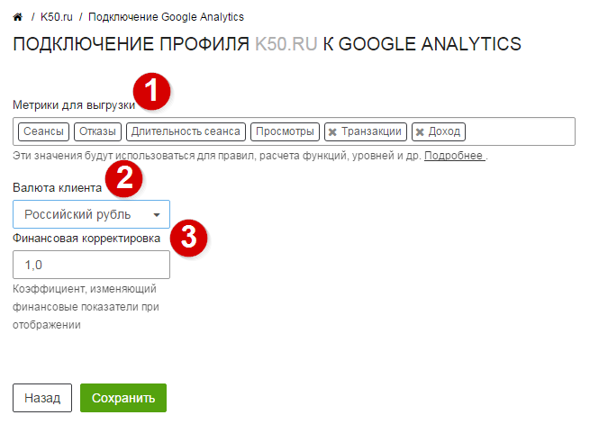
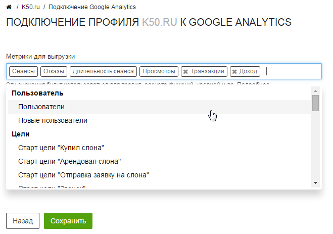
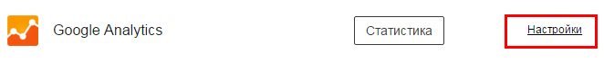
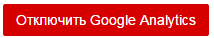

Подключение Google Analytics
К50 позволяет работать с рекламными системами на основе данных Google Analytics.
Для начала импорта данных необходимо подключить представление Google Analytics к оптизиматору К50. Подключение к системе осуществляется через виджет на главной странице клиента. Для начала подключения Google Analytics к вашему проекту нажмите Подключить

Авторизация
Первым этапом подключения является процедура авторизации в google. Данная процедура позволит К50 работать с данными вашего представления Google Analytics.
Обратите внимание
Перед началом данной процедуры вам необходимо авторизоваться в Google Analytics под логином, которому доступно представление Google Analytics.
Для начала процесса авторизации следует нажать на кнопку 
Появится всплывающее окно следующего вида:

Вам необходимо разрешить доступ К50 к данным Google Analytics, в противном случае процедура подключения будет прервана.
Выбор представления Google Analytics
После прохождения авторизации вы будете перемещены в окно выбора представления Google Analytics, с которым вы собираетесь работать.

Обратите внимание
Требуется выбрать представление (profile) Google Analytics, а не веб-ресурс (web property). Номер представления отличается от номера ресурса. Найти его можно в настройках пердставления в Google Analytics в разделе Администратор
Настройки подключения
После выбора нужного представления вы будете перемещены в окно с настройками подключения следующего вида.

Обратите внимание на параметры в настройках
Вам необходимо выбрать метрики, с которыми вы собираетесь работать в К50. В зависимости от настроек Google Analytics вам может потребоваться скачивать различные цели, транзакции, пользовательские метрики и пр.
Для добавления метрики в список для выгрузки необходимо кликнуть в поле с выбранными метриками и добавить метрику из всплывающего меню, которое появится после клика.

Тип валюты, используемый в Google Analytics. По умолчанию указывается валюта из настроек представления, валюту можно поменять при необходимости.
Коэффициент, на который следует домножать все валютные показатели во время работы со статистикой. Данный коэффициент полезен, когда вы хотите в стоимость закладывать дополнительные издержки (например, НДС)
Скачивание данных
После сохранения настроек, запустится процедура скачивания статистики.
По умолчанию система скачивает данные за последние 90 дней. Период скачивания можно изменить в основных настройках клиента.
Обратите внимание
Процедура скачивания статистики занимает некоторое время, которое зависит от объема данных в выбранном представлении
После заверешения скачивания вы сможете пользоваться статистикой Google Analytics в К50. В дальнейшем, К50 будет обновлять данные в начале суток.
Обратите внимание
К50 не скачивает статистику за текущий день. Это значит, что вам будет доступна статистика Google Analytics до дня, предшествующего текущему дню.
Переподключение аккаунта
Вы можете повторно пройти процедуру подключения аккаунта, изменив настройки подключения. Для этого вам необходимо перейти в раздел настройки виджета google analytics.

В разделе Настройки подключения нажмите на кнопку 
Обратите внимание
После изменения настроек подключения все загруженные данные будут удалены и запустится процедура скачивания новых данных.
Отключение аккаунта
Вы можете отключить ваш аккаунт от управления в К50. Для этого вам необходимо перейти в раздел настройки виджета google analytics.
В разделе Настройки подключения нажмите на кнопку 
Обратите внимание
После отключения аккаунта будут удалены все загруженные данные google analytics из системы